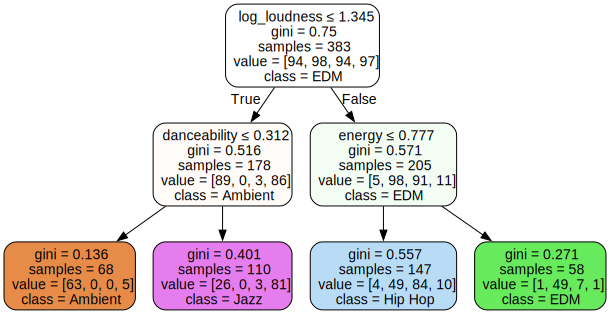
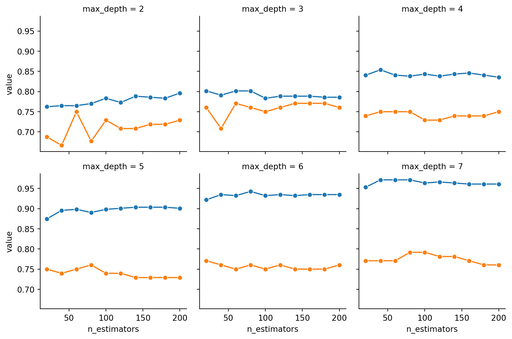
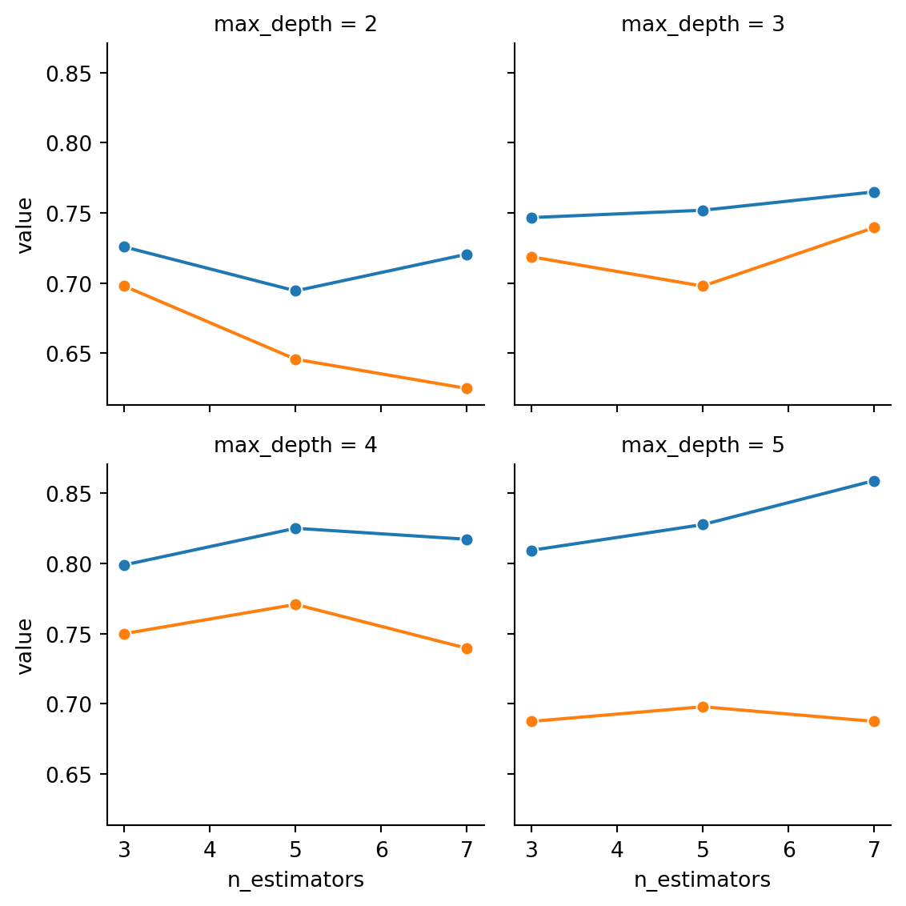
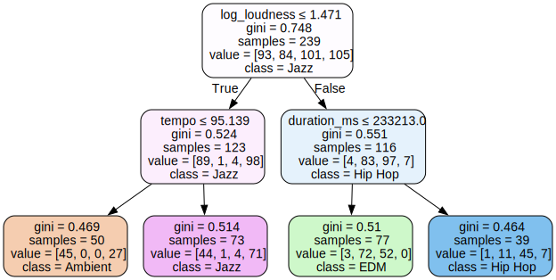
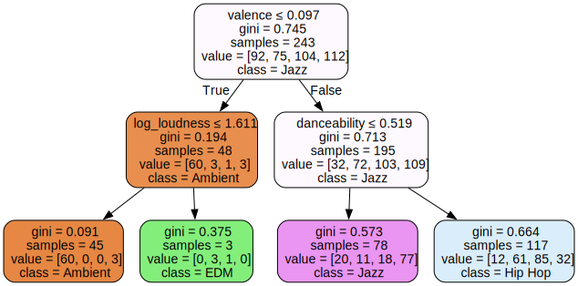
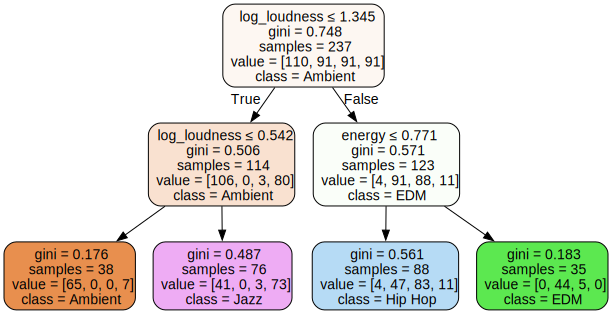

try:
import google.colab
IN_COLAB = True
except:
IN_COLAB = False
if IN_COLAB:
from google.colab import userdata
client_id = userdata.get('SPOTIFY_CLIENT_ID')
secret_id = userdata.get('SPOTIFY_SECRET_ID')
redirect_url = userdata.get('SPOTIFY_REDIRECT_URL')
else:
import dotenv
import os
dotenv.load_dotenv(override=True)
client_id = os.getenv('SPOTIFY_CLIENT_ID')
secret_id = os.getenv('SPOTIFY_CLIENT_SECRET')
redirect_uri = os.getenv('SPOTIFY_REDIRECT_URI')Decision Trees for Musical Genre Classification
DSAN5000: Data Science and Analytics
Extra Writeups
Colab Link
Decision Trees for Musical Genre Classification
What musical characteristics distinguish Hip Hop songs from Jazz songs? EDM songs from Ambient songs?
Arguments over these types of questions can occupy fans of music (especially chronically-overthinking ones like myself) for hours at a time, but in this lab we’ll take a different approach: as a step towards adjudicating these arguments, we’ll ask a computer to discover the relationship between individual songs and their genres, from two different perspectives represented by two different questions we can ask:
- Question 1: Which features of a song are most predictive of the song’s genre?
- Question 2: What line(s) could we draw to segment the space of all songs into subspaces representing Jazz, Hip Hop, etc.? For example, are there particular ranges of tempo, song duration, or loudness which most Jazz songs adopt?
While Question 1 represents a task you could already approach using methods we’ve learned in class to this point (specifically, the Feature Selction methods we’ve discussed), Question 2 is a new kind of task: a task for which Decision Trees (DTs) are particularly helpful!
The reason DTs are so helpful for answering Question 2 is that, while other methods like Naïve Bayes or Neural Networks can usually achieve greater accuracy on classification tasks than DTs (and can be more helpful for answering Question 1 specifically), DTs answer both of our questions simultaneously: given a feature matrix \(\mathbf{X}\) and a label vector \(\mathbf{y}\), they tell us
- Which features in \(\mathbf{X}\) are most important for predicting the labels in \(\mathbf{y}\), but also
- Precisely where we should “cut” the feature values in \(\mathbf{X}\) if we want to split the feature space into regions which distinguish (say) points with positive labels from points with negative labels
In last week’s slides, for example, I introduced a scenario where we found ourselves dropped somewhere on the planet at some time of year, and we wanted to know whether or this place and time had good skiing, on the basis of the following dataset:

For this data, while methods we already know like Naïve Bayes or Support Vector Machines may be able to classify the points with high accuracy, these methods do not give us an interpretable set of decision boundaries, telling us how we could “chop” this Month-Latitude space up into sub-regions to separate good-skiing regions from bad-skiing regions1.
In other words, what we lose in terms of the efficiency or accuracy of DTs relative to other algorithms, we gain in terms of interpretability: while a Support Vector Machine approach may find that computing the value
\[ f_i^* = \frac{\text{Tempo}_i^7 + \pi \cdot \sqrt{\text{SongDuration}_i}}{\lceil e^{\text{Danceability}_i} + \sqrt{2}\rceil !} \]
is extremely predictive of the genre of a song, this does not help us much as humans in terms of understanding what it is in a song that distinguishes its genre.
DTs help us here, therefore, in that they are restricted to learning trees which are determined solely by a collection of pairs \((f,s)\), where \(f\) is a feature and \(s\) is a cutpoint, at each level of the tree. Thus, continuing the song-classification example, a one-level DT would only be allowed to learn a single rule \((f,s)\), which would be interpretable as:
If you can only make a single “cut” in the feature space, you should cut it into a subregion \(R_1\) containing all points \(X_i\) for which feature \(f\) is less than \(s\) (\(X_{i,f} < s\)), and a subregion \(R_2\) containing all points where feature \(f\) is greater than \(s\) (\(X_{i,f} \geq s\))
So that, using the particular features we have for songs, this could translate to:
The single feature which is most predictive of a song’s genre is \(\text{Tempo}\): if a song’s tempo is greater than 120bpm, you should classify it as EDM, while if the song’s tempo is less than 120bpm you should classify it as Jazz.
(1) Data Scraping
For the actual dataset, we’re going to use Spotify’s Web API, which is very cool in general but specifically cool because it allows us to access a bunch of Spotify-generated “audio features” for each track, consisting of the following information about the track:
| Feature | Description |
|---|---|
acousticness |
A confidence measure from 0.0 to 1.0 of whether the track is acoustic. 1.0 represents high confidence the track is acoustic. |
danceability |
Danceability describes how suitable a track is for dancing based on a combination of musical elements including tempo, rhythm stability, beat strength, and overall regularity. A value of 0.0 is least danceable and 1.0 is most danceable. |
duration_ms |
The duration of the track in milliseconds. |
energy |
Energy is a measure from 0.0 to 1.0 and represents a perceptual measure of intensity and activity. Typically, energetic tracks feel fast, loud, and noisy. For example, death metal has high energy, while a Bach prelude scores low on the scale. Perceptual features contributing to this attribute include dynamic range, perceived loudness, timbre, onset rate, and general entropy. |
instrumentalness |
Predicts whether a track contains no vocals. “Ooh” and “aah” sounds are treated as instrumental in this context. Rap or spoken word tracks are clearly “vocal”. The closer the instrumentalness value is to 1.0, the greater likelihood the track contains no vocal content. Values above 0.5 are intended to represent instrumental tracks, but confidence is higher as the value approaches 1.0. |
key |
The key the track is in. Integers map to pitches using standard Pitch Class notation. E.g. 0 = C, 1 = C♯/D♭, 2 = D, and so on. If no key was detected, the value is -1. |
liveness |
Detects the presence of an audience in the recording. Higher liveness values represent an increased probability that the track was performed live. A value above 0.8 provides strong likelihood that the track is live. |
loudness |
The overall loudness of a track in decibels (dB). Loudness values are averaged across the entire track and are useful for comparing relative loudness of tracks. Loudness is the quality of a sound that is the primary psychological correlate of physical strength (amplitude). Values typically range between -60 and 0 db. |
mode |
Mode indicates the modality (major or minor) of a track, the type of scale from which its melodic content is derived. Major is represented by 1 and minor is 0. |
speechiness |
Speechiness detects the presence of spoken words in a track. The more exclusively speech-like the recording (e.g. talk show, audio book, poetry), the closer to 1.0 the attribute value. Values above 0.66 describe tracks that are probably made entirely of spoken words. Values between 0.33 and 0.66 describe tracks that may contain both music and speech, either in sections or layered, including such cases as rap music. Values below 0.33 most likely represent music and other non-speech-like tracks. |
tempo |
The overall estimated tempo of a track in beats per minute (BPM). In musical terminology, tempo is the speed or pace of a given piece and derives directly from the average beat duration. |
time_signature |
An estimated time signature. The time signature (meter) is a notational convention to specify how many beats are in each bar (or measure). The time signature ranges from 3 to 7 indicating time signatures of “3/4”, to “7/4”. |
valence |
A measure from 0.0 to 1.0 describing the musical positiveness conveyed by a track. Tracks with high valence sound more positive (e.g. happy, cheerful, euphoric), while tracks with low valence sound more negative (e.g. sad, depressed, angry). |
Here we need Spotify API keys, which we load:
- (In Colab) using Colab’s new Secrets functionality (accessible in the sidebar on the left, by clicking the key icon, above the folder icon)
- (Otherwise) using a
.envfile in the base directory of our project (which we make sure to not commit to GitHub!)
import requests
import pandas as pd
import numpy as npHere we create a session, since we’re going to want to send an authorization header with every request we make to the Spotify API. Using a session object allows us to set the headers just once, rather than having to provide a headers argument to every requests call.
my_session = requests.session()Here we request an access token, which we will be able to use to make calls to the Spotify API for one hour (at which point we’ll have to request another access token, by re-running this code)
token_request_url = "https://accounts.spotify.com/api/token"
tr_headers = {
'Content-Type': 'application/x-www-form-urlencoded'
}
tr_data = {
'grant_type': 'client_credentials',
'client_id': client_id,
'client_secret': secret_id
}
response = my_session.post(token_request_url, headers=tr_headers, data=tr_data)response_json = response.json()
my_token = response_json['access_token']
my_token'BQBsa7MAbWkvRPWDgJlpS6N8uqzFiIpI25AX0DPTrg6jRMblq3GDZ7rSzab6DLt-7EDdhcb4KwiKwBUAQLD_HqmHy7QKvsJBu3LddB1Ky2QL19YP9hg'Now we can include this access token in our session’s header settings, so that from now on all calls to the Spotify API will include this token as our authorization:
session_header = {
'Authorization': f'Bearer {my_token}'
}
my_session.headers.update(session_header)genre_map = {
# https://musicalyst.com/genre/jazz
'Jazz': [
'Chet Baker', 'Ella Fitzgerald', 'Stan Getz', 'Billie Holiday',
'Miles Davis', 'John Coltrane', 'Bill Evans', 'Duke Ellington',
'Herbie Hancock', 'Bill Evans Trio', 'Charles Mingus', 'Wes Montgomery'
],
'Hip Hop': [
'Drake', 'Kanye West', 'Kendrick Lamar', 'Tyler, The Creator',
'Metro Boomin', 'Travis Scott', 'Mac Miller', 'J. Cole',
'Eminem', 'Lil Uzi Vert', '21 Savage', 'Future'
],
'Rock': [
'Arctic Monkeys', 'Radiohead', 'Deftones', 'Tame Impala',
'The Smiths', 'Nirvana', 'Queen', 'The Beatles',
'Paramore', 'The 1975', 'Gorillaz', 'My Chemical Romance'
],
'EDM': [
'Calvin Harris', 'David Guetta', 'Avicii', 'Fred again..',
'Tiësto', 'Marshmello', 'Skrillex', 'Kygo',
'ILLENIUM', 'Martin Garrix', 'Flume', 'Zedd'
],
'R&B': [
'SZA', 'Beyoncé', 'Brent Faiyaz', 'Michael Jackson',
'Summer Walker', 'Tory Lanez', 'Bryson Tiller', 'PARTYNEXTDOOR',
'Chris Brown', 'Miguel', 'Giveon', 'Jhené Aiko'
],
'Country': [
'Luke Combs', 'Luke Bryan', 'Zac Brown Band', 'Jason Aldean',
'Jon Pardi', 'Thomas Rhett', 'Florida Georgia Line', 'Kenny Chesney',
'Carrie Underwood', 'George Strait', 'Kelsea Ballerini', 'Sam Hunt'
],
'Ambient': [
'Aphex Twin', 'Grouper', 'Brian Eno', 'Tim Hecker',
'Oneohtrix Point Never', 'Harold Budd', 'William Basinski', 'Chihei Hatakeyama',
'Hiroshi Yoshimura', 'Marconi Union', 'Susumu Yokota', 'Stars Of The Lid'
]
}data_rows = []
for cur_genre, artist_list in genre_map.items():
for cur_artist in artist_list:
cur_data = {
'artist': cur_artist,
'genre': cur_genre
}
data_rows.append(cur_data)
artist_df = pd.DataFrame(data_rows)
artist_df| artist | genre | |
|---|---|---|
| 0 | Chet Baker | Jazz |
| 1 | Ella Fitzgerald | Jazz |
| 2 | Stan Getz | Jazz |
| 3 | Billie Holiday | Jazz |
| 4 | Miles Davis | Jazz |
| ... | ... | ... |
| 79 | Chihei Hatakeyama | Ambient |
| 80 | Hiroshi Yoshimura | Ambient |
| 81 | Marconi Union | Ambient |
| 82 | Susumu Yokota | Ambient |
| 83 | Stars Of The Lid | Ambient |
84 rows × 2 columns
# Get spotify id for each artist
artist_search_template = "https://api.spotify.com/v1/search?q={query}&type=artist"
def get_artist_id(artist_name):
artist_search_url = artist_search_template.format(query=artist_name)
artist_search_response = my_session.get(artist_search_url)
artist_response_json = artist_search_response.json()
response_artists = artist_response_json['artists']
#response_artists.keys()
artist_id = response_artists['items'][0]['id']
return artist_id
artist_df['artist_id'] = artist_df['artist'].apply(get_artist_id)And save this information to a .csv file, so we don’t have to make redundant API calls:
artist_df.to_csv("artist_ids.csv", index=False)artist_df.head()| artist | genre | artist_id | |
|---|---|---|---|
| 0 | Chet Baker | Jazz | 3rxeQlsv0Sc2nyYaZ5W71T |
| 1 | Ella Fitzgerald | Jazz | 5V0MlUE1Bft0mbLlND7FJz |
| 2 | Stan Getz | Jazz | 0FMucZsEnCxs5pqBjHjIc8 |
| 3 | Billie Holiday | Jazz | 1YzCsTRb22dQkh9lghPIrp |
| 4 | Miles Davis | Jazz | 0kbYTNQb4Pb1rPbbaF0pT4 |
Now we can request the most popular songs for each artist. To see how this works, first we request the most popular songs for the first artist in our DataFrame, Chet Baker:
first_artist_id = artist_df.iloc[0]['artist_id']
artist_api_template = 'https://api.spotify.com/v1/artists/{artist_id}/top-tracks?market=US'
artist_api_url = artist_api_template.format(artist_id = first_artist_id)
response = my_session.get(artist_api_url)
response_json = response.json()response_tracks = response_json['tracks']
len(response_tracks)10response_tracks[{'album': {'album_type': 'album',
'artists': [{'external_urls': {'spotify': 'https://open.spotify.com/artist/3rxeQlsv0Sc2nyYaZ5W71T'},
'href': 'https://api.spotify.com/v1/artists/3rxeQlsv0Sc2nyYaZ5W71T',
'id': '3rxeQlsv0Sc2nyYaZ5W71T',
'name': 'Chet Baker',
'type': 'artist',
'uri': 'spotify:artist:3rxeQlsv0Sc2nyYaZ5W71T'}],
'external_urls': {'spotify': 'https://open.spotify.com/album/5JJ779nrbHx0KB2lBrMMa4'},
'href': 'https://api.spotify.com/v1/albums/5JJ779nrbHx0KB2lBrMMa4',
'id': '5JJ779nrbHx0KB2lBrMMa4',
'images': [{'height': 640,
'url': 'https://i.scdn.co/image/ab67616d0000b273bcaf6f097b310e20504f2de0',
'width': 640},
{'height': 300,
'url': 'https://i.scdn.co/image/ab67616d00001e02bcaf6f097b310e20504f2de0',
'width': 300},
{'height': 64,
'url': 'https://i.scdn.co/image/ab67616d00004851bcaf6f097b310e20504f2de0',
'width': 64}],
'is_playable': True,
'name': 'Chet Baker Sings',
'release_date': '1956',
'release_date_precision': 'year',
'total_tracks': 14,
'type': 'album',
'uri': 'spotify:album:5JJ779nrbHx0KB2lBrMMa4'},
'artists': [{'external_urls': {'spotify': 'https://open.spotify.com/artist/3rxeQlsv0Sc2nyYaZ5W71T'},
'href': 'https://api.spotify.com/v1/artists/3rxeQlsv0Sc2nyYaZ5W71T',
'id': '3rxeQlsv0Sc2nyYaZ5W71T',
'name': 'Chet Baker',
'type': 'artist',
'uri': 'spotify:artist:3rxeQlsv0Sc2nyYaZ5W71T'}],
'disc_number': 1,
'duration_ms': 201440,
'explicit': False,
'external_ids': {'isrc': 'USBN28900070'},
'external_urls': {'spotify': 'https://open.spotify.com/track/0F845nujLVqCb0XMZCh5Pc'},
'href': 'https://api.spotify.com/v1/tracks/0F845nujLVqCb0XMZCh5Pc',
'id': '0F845nujLVqCb0XMZCh5Pc',
'is_local': False,
'is_playable': True,
'name': 'I Fall In Love Too Easily',
'popularity': 69,
'preview_url': None,
'track_number': 13,
'type': 'track',
'uri': 'spotify:track:0F845nujLVqCb0XMZCh5Pc'},
{'album': {'album_type': 'album',
'artists': [{'external_urls': {'spotify': 'https://open.spotify.com/artist/3rxeQlsv0Sc2nyYaZ5W71T'},
'href': 'https://api.spotify.com/v1/artists/3rxeQlsv0Sc2nyYaZ5W71T',
'id': '3rxeQlsv0Sc2nyYaZ5W71T',
'name': 'Chet Baker',
'type': 'artist',
'uri': 'spotify:artist:3rxeQlsv0Sc2nyYaZ5W71T'}],
'external_urls': {'spotify': 'https://open.spotify.com/album/5JJ779nrbHx0KB2lBrMMa4'},
'href': 'https://api.spotify.com/v1/albums/5JJ779nrbHx0KB2lBrMMa4',
'id': '5JJ779nrbHx0KB2lBrMMa4',
'images': [{'height': 640,
'url': 'https://i.scdn.co/image/ab67616d0000b273bcaf6f097b310e20504f2de0',
'width': 640},
{'height': 300,
'url': 'https://i.scdn.co/image/ab67616d00001e02bcaf6f097b310e20504f2de0',
'width': 300},
{'height': 64,
'url': 'https://i.scdn.co/image/ab67616d00004851bcaf6f097b310e20504f2de0',
'width': 64}],
'is_playable': True,
'name': 'Chet Baker Sings',
'release_date': '1956',
'release_date_precision': 'year',
'total_tracks': 14,
'type': 'album',
'uri': 'spotify:album:5JJ779nrbHx0KB2lBrMMa4'},
'artists': [{'external_urls': {'spotify': 'https://open.spotify.com/artist/3rxeQlsv0Sc2nyYaZ5W71T'},
'href': 'https://api.spotify.com/v1/artists/3rxeQlsv0Sc2nyYaZ5W71T',
'id': '3rxeQlsv0Sc2nyYaZ5W71T',
'name': 'Chet Baker',
'type': 'artist',
'uri': 'spotify:artist:3rxeQlsv0Sc2nyYaZ5W71T'}],
'disc_number': 1,
'duration_ms': 141133,
'explicit': False,
'external_ids': {'isrc': 'USBN28900073'},
'external_urls': {'spotify': 'https://open.spotify.com/track/4l9hml2UCnxoNI3yCdL1BW'},
'href': 'https://api.spotify.com/v1/tracks/4l9hml2UCnxoNI3yCdL1BW',
'id': '4l9hml2UCnxoNI3yCdL1BW',
'is_local': False,
'is_playable': True,
'name': 'My Funny Valentine',
'popularity': 68,
'preview_url': None,
'track_number': 10,
'type': 'track',
'uri': 'spotify:track:4l9hml2UCnxoNI3yCdL1BW'},
{'album': {'album_type': 'album',
'artists': [{'external_urls': {'spotify': 'https://open.spotify.com/artist/3rxeQlsv0Sc2nyYaZ5W71T'},
'href': 'https://api.spotify.com/v1/artists/3rxeQlsv0Sc2nyYaZ5W71T',
'id': '3rxeQlsv0Sc2nyYaZ5W71T',
'name': 'Chet Baker',
'type': 'artist',
'uri': 'spotify:artist:3rxeQlsv0Sc2nyYaZ5W71T'}],
'external_urls': {'spotify': 'https://open.spotify.com/album/5JJ779nrbHx0KB2lBrMMa4'},
'href': 'https://api.spotify.com/v1/albums/5JJ779nrbHx0KB2lBrMMa4',
'id': '5JJ779nrbHx0KB2lBrMMa4',
'images': [{'height': 640,
'url': 'https://i.scdn.co/image/ab67616d0000b273bcaf6f097b310e20504f2de0',
'width': 640},
{'height': 300,
'url': 'https://i.scdn.co/image/ab67616d00001e02bcaf6f097b310e20504f2de0',
'width': 300},
{'height': 64,
'url': 'https://i.scdn.co/image/ab67616d00004851bcaf6f097b310e20504f2de0',
'width': 64}],
'is_playable': True,
'name': 'Chet Baker Sings',
'release_date': '1956',
'release_date_precision': 'year',
'total_tracks': 14,
'type': 'album',
'uri': 'spotify:album:5JJ779nrbHx0KB2lBrMMa4'},
'artists': [{'external_urls': {'spotify': 'https://open.spotify.com/artist/3rxeQlsv0Sc2nyYaZ5W71T'},
'href': 'https://api.spotify.com/v1/artists/3rxeQlsv0Sc2nyYaZ5W71T',
'id': '3rxeQlsv0Sc2nyYaZ5W71T',
'name': 'Chet Baker',
'type': 'artist',
'uri': 'spotify:artist:3rxeQlsv0Sc2nyYaZ5W71T'}],
'disc_number': 1,
'duration_ms': 166760,
'explicit': False,
'external_ids': {'isrc': 'USBN28900129'},
'external_urls': {'spotify': 'https://open.spotify.com/track/4m6OC8u2rC6LMFtFWsME7d'},
'href': 'https://api.spotify.com/v1/tracks/4m6OC8u2rC6LMFtFWsME7d',
'id': '4m6OC8u2rC6LMFtFWsME7d',
'is_local': False,
'is_playable': True,
'name': 'Time After Time - Vocal Version',
'popularity': 63,
'preview_url': None,
'track_number': 8,
'type': 'track',
'uri': 'spotify:track:4m6OC8u2rC6LMFtFWsME7d'},
{'album': {'album_type': 'album',
'artists': [{'external_urls': {'spotify': 'https://open.spotify.com/artist/3rxeQlsv0Sc2nyYaZ5W71T'},
'href': 'https://api.spotify.com/v1/artists/3rxeQlsv0Sc2nyYaZ5W71T',
'id': '3rxeQlsv0Sc2nyYaZ5W71T',
'name': 'Chet Baker',
'type': 'artist',
'uri': 'spotify:artist:3rxeQlsv0Sc2nyYaZ5W71T'}],
'external_urls': {'spotify': 'https://open.spotify.com/album/3Cnj43AyRQy21WQWsngNDs'},
'href': 'https://api.spotify.com/v1/albums/3Cnj43AyRQy21WQWsngNDs',
'id': '3Cnj43AyRQy21WQWsngNDs',
'images': [{'height': 640,
'url': 'https://i.scdn.co/image/ab67616d0000b2733e4457449e2f1b31de4d45e7',
'width': 640},
{'height': 300,
'url': 'https://i.scdn.co/image/ab67616d00001e023e4457449e2f1b31de4d45e7',
'width': 300},
{'height': 64,
'url': 'https://i.scdn.co/image/ab67616d000048513e4457449e2f1b31de4d45e7',
'width': 64}],
'is_playable': True,
'name': 'Jazz Moods - Cool',
'release_date': '1974',
'release_date_precision': 'year',
'total_tracks': 7,
'type': 'album',
'uri': 'spotify:album:3Cnj43AyRQy21WQWsngNDs'},
'artists': [{'external_urls': {'spotify': 'https://open.spotify.com/artist/3rxeQlsv0Sc2nyYaZ5W71T'},
'href': 'https://api.spotify.com/v1/artists/3rxeQlsv0Sc2nyYaZ5W71T',
'id': '3rxeQlsv0Sc2nyYaZ5W71T',
'name': 'Chet Baker',
'type': 'artist',
'uri': 'spotify:artist:3rxeQlsv0Sc2nyYaZ5W71T'}],
'disc_number': 1,
'duration_ms': 422640,
'explicit': False,
'external_ids': {'isrc': 'USSM10021825'},
'external_urls': {'spotify': 'https://open.spotify.com/track/1QlTNF43OyKK9BorIRsJ8o'},
'href': 'https://api.spotify.com/v1/tracks/1QlTNF43OyKK9BorIRsJ8o',
'id': '1QlTNF43OyKK9BorIRsJ8o',
'is_local': False,
'is_playable': True,
'name': 'Autumn Leaves',
'popularity': 57,
'preview_url': 'https://p.scdn.co/mp3-preview/ec82c66610e033e81e0c615edb2ddf5f2575d54c?cid=5f6ccd4e666f48f9856ea6e6f078666a',
'track_number': 3,
'type': 'track',
'uri': 'spotify:track:1QlTNF43OyKK9BorIRsJ8o'},
{'album': {'album_type': 'album',
'artists': [{'external_urls': {'spotify': 'https://open.spotify.com/artist/3rxeQlsv0Sc2nyYaZ5W71T'},
'href': 'https://api.spotify.com/v1/artists/3rxeQlsv0Sc2nyYaZ5W71T',
'id': '3rxeQlsv0Sc2nyYaZ5W71T',
'name': 'Chet Baker',
'type': 'artist',
'uri': 'spotify:artist:3rxeQlsv0Sc2nyYaZ5W71T'}],
'external_urls': {'spotify': 'https://open.spotify.com/album/5JJ779nrbHx0KB2lBrMMa4'},
'href': 'https://api.spotify.com/v1/albums/5JJ779nrbHx0KB2lBrMMa4',
'id': '5JJ779nrbHx0KB2lBrMMa4',
'images': [{'height': 640,
'url': 'https://i.scdn.co/image/ab67616d0000b273bcaf6f097b310e20504f2de0',
'width': 640},
{'height': 300,
'url': 'https://i.scdn.co/image/ab67616d00001e02bcaf6f097b310e20504f2de0',
'width': 300},
{'height': 64,
'url': 'https://i.scdn.co/image/ab67616d00004851bcaf6f097b310e20504f2de0',
'width': 64}],
'is_playable': True,
'name': 'Chet Baker Sings',
'release_date': '1956',
'release_date_precision': 'year',
'total_tracks': 14,
'type': 'album',
'uri': 'spotify:album:5JJ779nrbHx0KB2lBrMMa4'},
'artists': [{'external_urls': {'spotify': 'https://open.spotify.com/artist/3rxeQlsv0Sc2nyYaZ5W71T'},
'href': 'https://api.spotify.com/v1/artists/3rxeQlsv0Sc2nyYaZ5W71T',
'id': '3rxeQlsv0Sc2nyYaZ5W71T',
'name': 'Chet Baker',
'type': 'artist',
'uri': 'spotify:artist:3rxeQlsv0Sc2nyYaZ5W71T'}],
'disc_number': 1,
'duration_ms': 179640,
'explicit': False,
'external_ids': {'isrc': 'USBN28900074'},
'external_urls': {'spotify': 'https://open.spotify.com/track/4gFlHAye7To29Fs4UszQUH'},
'href': 'https://api.spotify.com/v1/tracks/4gFlHAye7To29Fs4UszQUH',
'id': '4gFlHAye7To29Fs4UszQUH',
'is_local': False,
'is_playable': True,
'name': 'I Get Along Without You Very Well (Except Sometimes) - Vocal Version',
'popularity': 62,
'preview_url': None,
'track_number': 9,
'type': 'track',
'uri': 'spotify:track:4gFlHAye7To29Fs4UszQUH'},
{'album': {'album_type': 'album',
'artists': [{'external_urls': {'spotify': 'https://open.spotify.com/artist/3rxeQlsv0Sc2nyYaZ5W71T'},
'href': 'https://api.spotify.com/v1/artists/3rxeQlsv0Sc2nyYaZ5W71T',
'id': '3rxeQlsv0Sc2nyYaZ5W71T',
'name': 'Chet Baker',
'type': 'artist',
'uri': 'spotify:artist:3rxeQlsv0Sc2nyYaZ5W71T'}],
'external_urls': {'spotify': 'https://open.spotify.com/album/5JJ779nrbHx0KB2lBrMMa4'},
'href': 'https://api.spotify.com/v1/albums/5JJ779nrbHx0KB2lBrMMa4',
'id': '5JJ779nrbHx0KB2lBrMMa4',
'images': [{'height': 640,
'url': 'https://i.scdn.co/image/ab67616d0000b273bcaf6f097b310e20504f2de0',
'width': 640},
{'height': 300,
'url': 'https://i.scdn.co/image/ab67616d00001e02bcaf6f097b310e20504f2de0',
'width': 300},
{'height': 64,
'url': 'https://i.scdn.co/image/ab67616d00004851bcaf6f097b310e20504f2de0',
'width': 64}],
'is_playable': True,
'name': 'Chet Baker Sings',
'release_date': '1956',
'release_date_precision': 'year',
'total_tracks': 14,
'type': 'album',
'uri': 'spotify:album:5JJ779nrbHx0KB2lBrMMa4'},
'artists': [{'external_urls': {'spotify': 'https://open.spotify.com/artist/3rxeQlsv0Sc2nyYaZ5W71T'},
'href': 'https://api.spotify.com/v1/artists/3rxeQlsv0Sc2nyYaZ5W71T',
'id': '3rxeQlsv0Sc2nyYaZ5W71T',
'name': 'Chet Baker',
'type': 'artist',
'uri': 'spotify:artist:3rxeQlsv0Sc2nyYaZ5W71T'}],
'disc_number': 1,
'duration_ms': 215466,
'explicit': False,
'external_ids': {'isrc': 'USBN28900078'},
'external_urls': {'spotify': 'https://open.spotify.com/track/06UkYE0SZ3Y8zGRFOuWGAe'},
'href': 'https://api.spotify.com/v1/tracks/06UkYE0SZ3Y8zGRFOuWGAe',
'id': '06UkYE0SZ3Y8zGRFOuWGAe',
'is_local': False,
'is_playable': True,
'name': "It's Always You - Vocal Version",
'popularity': 62,
'preview_url': None,
'track_number': 2,
'type': 'track',
'uri': 'spotify:track:06UkYE0SZ3Y8zGRFOuWGAe'},
{'album': {'album_type': 'album',
'artists': [{'external_urls': {'spotify': 'https://open.spotify.com/artist/3rxeQlsv0Sc2nyYaZ5W71T'},
'href': 'https://api.spotify.com/v1/artists/3rxeQlsv0Sc2nyYaZ5W71T',
'id': '3rxeQlsv0Sc2nyYaZ5W71T',
'name': 'Chet Baker',
'type': 'artist',
'uri': 'spotify:artist:3rxeQlsv0Sc2nyYaZ5W71T'}],
'external_urls': {'spotify': 'https://open.spotify.com/album/5JJ779nrbHx0KB2lBrMMa4'},
'href': 'https://api.spotify.com/v1/albums/5JJ779nrbHx0KB2lBrMMa4',
'id': '5JJ779nrbHx0KB2lBrMMa4',
'images': [{'height': 640,
'url': 'https://i.scdn.co/image/ab67616d0000b273bcaf6f097b310e20504f2de0',
'width': 640},
{'height': 300,
'url': 'https://i.scdn.co/image/ab67616d00001e02bcaf6f097b310e20504f2de0',
'width': 300},
{'height': 64,
'url': 'https://i.scdn.co/image/ab67616d00004851bcaf6f097b310e20504f2de0',
'width': 64}],
'is_playable': True,
'name': 'Chet Baker Sings',
'release_date': '1956',
'release_date_precision': 'year',
'total_tracks': 14,
'type': 'album',
'uri': 'spotify:album:5JJ779nrbHx0KB2lBrMMa4'},
'artists': [{'external_urls': {'spotify': 'https://open.spotify.com/artist/3rxeQlsv0Sc2nyYaZ5W71T'},
'href': 'https://api.spotify.com/v1/artists/3rxeQlsv0Sc2nyYaZ5W71T',
'id': '3rxeQlsv0Sc2nyYaZ5W71T',
'name': 'Chet Baker',
'type': 'artist',
'uri': 'spotify:artist:3rxeQlsv0Sc2nyYaZ5W71T'}],
'disc_number': 1,
'duration_ms': 184466,
'explicit': False,
'external_ids': {'isrc': 'USBN28900093'},
'external_urls': {'spotify': 'https://open.spotify.com/track/3pfbQmD5xGH9Tcc7GqGfSL'},
'href': 'https://api.spotify.com/v1/tracks/3pfbQmD5xGH9Tcc7GqGfSL',
'id': '3pfbQmD5xGH9Tcc7GqGfSL',
'is_local': False,
'is_playable': True,
'name': 'But Not For Me - Vocal Version',
'popularity': 60,
'preview_url': None,
'track_number': 7,
'type': 'track',
'uri': 'spotify:track:3pfbQmD5xGH9Tcc7GqGfSL'},
{'album': {'album_type': 'album',
'artists': [{'external_urls': {'spotify': 'https://open.spotify.com/artist/3rxeQlsv0Sc2nyYaZ5W71T'},
'href': 'https://api.spotify.com/v1/artists/3rxeQlsv0Sc2nyYaZ5W71T',
'id': '3rxeQlsv0Sc2nyYaZ5W71T',
'name': 'Chet Baker',
'type': 'artist',
'uri': 'spotify:artist:3rxeQlsv0Sc2nyYaZ5W71T'}],
'external_urls': {'spotify': 'https://open.spotify.com/album/5JJ779nrbHx0KB2lBrMMa4'},
'href': 'https://api.spotify.com/v1/albums/5JJ779nrbHx0KB2lBrMMa4',
'id': '5JJ779nrbHx0KB2lBrMMa4',
'images': [{'height': 640,
'url': 'https://i.scdn.co/image/ab67616d0000b273bcaf6f097b310e20504f2de0',
'width': 640},
{'height': 300,
'url': 'https://i.scdn.co/image/ab67616d00001e02bcaf6f097b310e20504f2de0',
'width': 300},
{'height': 64,
'url': 'https://i.scdn.co/image/ab67616d00004851bcaf6f097b310e20504f2de0',
'width': 64}],
'is_playable': True,
'name': 'Chet Baker Sings',
'release_date': '1956',
'release_date_precision': 'year',
'total_tracks': 14,
'type': 'album',
'uri': 'spotify:album:5JJ779nrbHx0KB2lBrMMa4'},
'artists': [{'external_urls': {'spotify': 'https://open.spotify.com/artist/3rxeQlsv0Sc2nyYaZ5W71T'},
'href': 'https://api.spotify.com/v1/artists/3rxeQlsv0Sc2nyYaZ5W71T',
'id': '3rxeQlsv0Sc2nyYaZ5W71T',
'name': 'Chet Baker',
'type': 'artist',
'uri': 'spotify:artist:3rxeQlsv0Sc2nyYaZ5W71T'}],
'disc_number': 1,
'duration_ms': 183893,
'explicit': False,
'external_ids': {'isrc': 'USBN28900117'},
'external_urls': {'spotify': 'https://open.spotify.com/track/2d64G7VaZdHQuAquz5HQNu'},
'href': 'https://api.spotify.com/v1/tracks/2d64G7VaZdHQuAquz5HQNu',
'id': '2d64G7VaZdHQuAquz5HQNu',
'is_local': False,
'is_playable': True,
'name': 'That Old Feeling',
'popularity': 58,
'preview_url': None,
'track_number': 1,
'type': 'track',
'uri': 'spotify:track:2d64G7VaZdHQuAquz5HQNu'},
{'album': {'album_type': 'album',
'artists': [{'external_urls': {'spotify': 'https://open.spotify.com/artist/3rxeQlsv0Sc2nyYaZ5W71T'},
'href': 'https://api.spotify.com/v1/artists/3rxeQlsv0Sc2nyYaZ5W71T',
'id': '3rxeQlsv0Sc2nyYaZ5W71T',
'name': 'Chet Baker',
'type': 'artist',
'uri': 'spotify:artist:3rxeQlsv0Sc2nyYaZ5W71T'}],
'external_urls': {'spotify': 'https://open.spotify.com/album/6UEhnkt6B9hfACniByRiEm'},
'href': 'https://api.spotify.com/v1/albums/6UEhnkt6B9hfACniByRiEm',
'id': '6UEhnkt6B9hfACniByRiEm',
'images': [{'height': 640,
'url': 'https://i.scdn.co/image/ab67616d0000b2731cb6a101d306a562d210f334',
'width': 640},
{'height': 300,
'url': 'https://i.scdn.co/image/ab67616d00001e021cb6a101d306a562d210f334',
'width': 300},
{'height': 64,
'url': 'https://i.scdn.co/image/ab67616d000048511cb6a101d306a562d210f334',
'width': 64}],
'is_playable': True,
'name': 'Essential Standards (eBooklet)',
'release_date': '2009-01-01',
'release_date_precision': 'day',
'total_tracks': 12,
'type': 'album',
'uri': 'spotify:album:6UEhnkt6B9hfACniByRiEm'},
'artists': [{'external_urls': {'spotify': 'https://open.spotify.com/artist/3rxeQlsv0Sc2nyYaZ5W71T'},
'href': 'https://api.spotify.com/v1/artists/3rxeQlsv0Sc2nyYaZ5W71T',
'id': '3rxeQlsv0Sc2nyYaZ5W71T',
'name': 'Chet Baker',
'type': 'artist',
'uri': 'spotify:artist:3rxeQlsv0Sc2nyYaZ5W71T'}],
'disc_number': 1,
'duration_ms': 304906,
'explicit': False,
'external_ids': {'isrc': 'USFI85800035'},
'external_urls': {'spotify': 'https://open.spotify.com/track/00jqmEUSISjkugkuFxGiTo'},
'href': 'https://api.spotify.com/v1/tracks/00jqmEUSISjkugkuFxGiTo',
'id': '00jqmEUSISjkugkuFxGiTo',
'is_local': False,
'is_playable': True,
'name': 'Everything Happens To Me',
'popularity': 54,
'preview_url': None,
'track_number': 11,
'type': 'track',
'uri': 'spotify:track:00jqmEUSISjkugkuFxGiTo'},
{'album': {'album_type': 'album',
'artists': [{'external_urls': {'spotify': 'https://open.spotify.com/artist/3rxeQlsv0Sc2nyYaZ5W71T'},
'href': 'https://api.spotify.com/v1/artists/3rxeQlsv0Sc2nyYaZ5W71T',
'id': '3rxeQlsv0Sc2nyYaZ5W71T',
'name': 'Chet Baker',
'type': 'artist',
'uri': 'spotify:artist:3rxeQlsv0Sc2nyYaZ5W71T'}],
'external_urls': {'spotify': 'https://open.spotify.com/album/6NVtIIsVMTuphtcAN9FxCc'},
'href': 'https://api.spotify.com/v1/albums/6NVtIIsVMTuphtcAN9FxCc',
'id': '6NVtIIsVMTuphtcAN9FxCc',
'images': [{'height': 640,
'url': 'https://i.scdn.co/image/ab67616d0000b273139959676bd3da09a14b40c3',
'width': 640},
{'height': 300,
'url': 'https://i.scdn.co/image/ab67616d00001e02139959676bd3da09a14b40c3',
'width': 300},
{'height': 64,
'url': 'https://i.scdn.co/image/ab67616d00004851139959676bd3da09a14b40c3',
'width': 64}],
'is_playable': True,
'name': 'Chet Baker Sings And Plays (Remastered 2004)',
'release_date': '1955-01-01',
'release_date_precision': 'day',
'total_tracks': 11,
'type': 'album',
'uri': 'spotify:album:6NVtIIsVMTuphtcAN9FxCc'},
'artists': [{'external_urls': {'spotify': 'https://open.spotify.com/artist/3rxeQlsv0Sc2nyYaZ5W71T'},
'href': 'https://api.spotify.com/v1/artists/3rxeQlsv0Sc2nyYaZ5W71T',
'id': '3rxeQlsv0Sc2nyYaZ5W71T',
'name': 'Chet Baker',
'type': 'artist',
'uri': 'spotify:artist:3rxeQlsv0Sc2nyYaZ5W71T'}],
'disc_number': 1,
'duration_ms': 223706,
'explicit': False,
'external_ids': {'isrc': 'USBN28900080'},
'external_urls': {'spotify': 'https://open.spotify.com/track/0UZFhlhUMrYyzzyOHkylM3'},
'href': 'https://api.spotify.com/v1/tracks/0UZFhlhUMrYyzzyOHkylM3',
'id': '0UZFhlhUMrYyzzyOHkylM3',
'is_local': False,
'is_playable': True,
'name': "Let's Get Lost",
'popularity': 56,
'preview_url': None,
'track_number': 1,
'type': 'track',
'uri': 'spotify:track:0UZFhlhUMrYyzzyOHkylM3'}]track_ids = [track_data['id'] for track_data in response_tracks]
track_ids_str = ','.join(track_ids)
track_ids_str'0F845nujLVqCb0XMZCh5Pc,4l9hml2UCnxoNI3yCdL1BW,4m6OC8u2rC6LMFtFWsME7d,1QlTNF43OyKK9BorIRsJ8o,4gFlHAye7To29Fs4UszQUH,06UkYE0SZ3Y8zGRFOuWGAe,3pfbQmD5xGH9Tcc7GqGfSL,2d64G7VaZdHQuAquz5HQNu,00jqmEUSISjkugkuFxGiTo,0UZFhlhUMrYyzzyOHkylM3'And now we can get the features for these tracks:
aud_feature_template = 'https://api.spotify.com/v1/audio-features?ids={track_ids}'
aud_feature_url = aud_feature_template.format(track_ids = track_ids_str)
aud_feature_response = my_session.get(aud_feature_url)
aud_feat_list = aud_feature_response.json()['audio_features']For each track, we now have feature info, so we add each track’s info to a list, which we then convert to a DataFrame
aud_feat_list[1]{'danceability': 0.438,
'energy': 0.00756,
'key': 0,
'loudness': -26.44,
'mode': 0,
'speechiness': 0.0382,
'acousticness': 0.941,
'instrumentalness': 0.00643,
'liveness': 0.109,
'valence': 0.277,
'tempo': 133.32,
'type': 'audio_features',
'id': '4l9hml2UCnxoNI3yCdL1BW',
'uri': 'spotify:track:4l9hml2UCnxoNI3yCdL1BW',
'track_href': 'https://api.spotify.com/v1/tracks/4l9hml2UCnxoNI3yCdL1BW',
'analysis_url': 'https://api.spotify.com/v1/audio-analysis/4l9hml2UCnxoNI3yCdL1BW',
'duration_ms': 141133,
'time_signature': 4}artist_df[artist_df['artist'] == "Tory Lanez"]| artist | genre | artist_id | |
|---|---|---|---|
| 53 | Tory Lanez | R&B | 2jku7tDXc6XoB6MO2hFuqg |
Now we can do this in a loop, for all of the artists!
all_track_data = []
for row_index, row in artist_df.iterrows():
cur_artist = row['artist']
print(cur_artist)
cur_genre = row['genre']
cur_artist_id = row['artist_id']
# Get the artist's top songs
artist_api_url = artist_api_template.format(artist_id = cur_artist_id)
artist_response = my_session.get(artist_api_url)
artist_response_json = artist_response.json()
print(artist_response_json.keys())
artist_response_tracks = artist_response_json['tracks']
track_names = [track_data['name'] for track_data in artist_response_tracks]
track_ids = [track_data['id'] for track_data in artist_response_tracks]
track_ids_str = ','.join(track_ids)
# Now we query the audio features API with this list of tracks
aud_feature_url = aud_feature_template.format(track_ids = track_ids_str)
aud_feature_response = my_session.get(aud_feature_url)
if 'audio_features' not in aud_feature_response.json():
continue
aud_feat_list = aud_feature_response.json()['audio_features']
# Each entry in aud_feat_list contains info for the track, so we create a dict
# object for each entry, and add each one to all_track_data
for track_index, cur_aud_feats in enumerate(aud_feat_list):
if cur_aud_feats is None:
continue
cur_track_data = {
'artist': cur_artist,
'genre': cur_genre,
'artist_id': cur_artist_id,
'name': track_names[track_index]
}
cur_track_data.update(cur_aud_feats)
all_track_data.append(cur_track_data)Chet Baker
dict_keys(['tracks'])
Ella Fitzgerald
dict_keys(['tracks'])
Stan Getz
dict_keys(['tracks'])
Billie Holiday
dict_keys(['tracks'])
Miles Davis
dict_keys(['tracks'])
John Coltrane
dict_keys(['tracks'])
Bill Evans
dict_keys(['tracks'])
Duke Ellington
dict_keys(['tracks'])
Herbie Hancock
dict_keys(['tracks'])
Bill Evans Trio
dict_keys(['tracks'])
Charles Mingus
dict_keys(['tracks'])
Wes Montgomery
dict_keys(['tracks'])
Drake
dict_keys(['tracks'])
Kanye West
dict_keys(['tracks'])
Kendrick Lamar
dict_keys(['tracks'])
Tyler, The Creator
dict_keys(['tracks'])
Metro Boomin
dict_keys(['tracks'])
Travis Scott
dict_keys(['tracks'])
Mac Miller
dict_keys(['tracks'])
J. Cole
dict_keys(['tracks'])
Eminem
dict_keys(['tracks'])
Lil Uzi Vert
dict_keys(['tracks'])
21 Savage
dict_keys(['tracks'])
Future
dict_keys(['tracks'])
Arctic Monkeys
dict_keys(['tracks'])
Radiohead
dict_keys(['tracks'])
Deftones
dict_keys(['tracks'])
Tame Impala
dict_keys(['tracks'])
The Smiths
dict_keys(['tracks'])
Nirvana
dict_keys(['tracks'])
Queen
dict_keys(['tracks'])
The Beatles
dict_keys(['tracks'])
Paramore
dict_keys(['tracks'])
The 1975
dict_keys(['tracks'])
Gorillaz
dict_keys(['tracks'])
My Chemical Romance
dict_keys(['tracks'])
Calvin Harris
dict_keys(['tracks'])
David Guetta
dict_keys(['tracks'])
Avicii
dict_keys(['tracks'])
Fred again..
dict_keys(['tracks'])
Tiësto
dict_keys(['tracks'])
Marshmello
dict_keys(['tracks'])
Skrillex
dict_keys(['tracks'])
Kygo
dict_keys(['tracks'])
ILLENIUM
dict_keys(['tracks'])
Martin Garrix
dict_keys(['tracks'])
Flume
dict_keys(['tracks'])
Zedd
dict_keys(['tracks'])
SZA
dict_keys(['tracks'])
Beyoncé
dict_keys(['tracks'])
Brent Faiyaz
dict_keys(['tracks'])
Michael Jackson
dict_keys(['tracks'])
Summer Walker
dict_keys(['tracks'])
Tory Lanez
dict_keys(['tracks'])
Bryson Tiller
dict_keys(['tracks'])
PARTYNEXTDOOR
dict_keys(['tracks'])
Chris Brown
dict_keys(['tracks'])
Miguel
dict_keys(['tracks'])
Giveon
dict_keys(['tracks'])
Jhené Aiko
dict_keys(['tracks'])
Luke Combs
dict_keys(['tracks'])
Luke Bryan
dict_keys(['tracks'])
Zac Brown Band
dict_keys(['tracks'])
Jason Aldean
dict_keys(['tracks'])
Jon Pardi
dict_keys(['tracks'])
Thomas Rhett
dict_keys(['tracks'])
Florida Georgia Line
dict_keys(['tracks'])
Kenny Chesney
dict_keys(['tracks'])
Carrie Underwood
dict_keys(['tracks'])
George Strait
dict_keys(['tracks'])
Kelsea Ballerini
dict_keys(['tracks'])
Sam Hunt
dict_keys(['tracks'])
Aphex Twin
dict_keys(['tracks'])
Grouper
dict_keys(['tracks'])
Brian Eno
dict_keys(['tracks'])
Tim Hecker
dict_keys(['tracks'])
Oneohtrix Point Never
dict_keys(['tracks'])
Harold Budd
dict_keys(['tracks'])
William Basinski
dict_keys(['tracks'])
Chihei Hatakeyama
dict_keys(['tracks'])
Hiroshi Yoshimura
dict_keys(['tracks'])
Marconi Union
dict_keys(['tracks'])
Susumu Yokota
dict_keys(['tracks'])
Stars Of The Lid
dict_keys(['tracks'])track_df = pd.DataFrame(all_track_data)
track_df.head()| artist | genre | artist_id | name | danceability | energy | key | loudness | mode | speechiness | ... | liveness | valence | tempo | type | id | uri | track_href | analysis_url | duration_ms | time_signature | |
|---|---|---|---|---|---|---|---|---|---|---|---|---|---|---|---|---|---|---|---|---|---|
| 0 | Chet Baker | Jazz | 3rxeQlsv0Sc2nyYaZ5W71T | I Fall In Love Too Easily | 0.532 | 0.06570 | 0 | -19.136 | 0 | 0.0406 | ... | 0.0946 | 0.292 | 128.607 | audio_features | 0F845nujLVqCb0XMZCh5Pc | spotify:track:0F845nujLVqCb0XMZCh5Pc | https://api.spotify.com/v1/tracks/0F845nujLVqC... | https://api.spotify.com/v1/audio-analysis/0F84... | 201440 | 4 |
| 1 | Chet Baker | Jazz | 3rxeQlsv0Sc2nyYaZ5W71T | My Funny Valentine | 0.438 | 0.00756 | 0 | -26.440 | 0 | 0.0382 | ... | 0.1090 | 0.277 | 133.320 | audio_features | 4l9hml2UCnxoNI3yCdL1BW | spotify:track:4l9hml2UCnxoNI3yCdL1BW | https://api.spotify.com/v1/tracks/4l9hml2UCnxo... | https://api.spotify.com/v1/audio-analysis/4l9h... | 141133 | 4 |
| 2 | Chet Baker | Jazz | 3rxeQlsv0Sc2nyYaZ5W71T | Time After Time - Vocal Version | 0.501 | 0.04540 | 0 | -18.783 | 1 | 0.0388 | ... | 0.2000 | 0.255 | 99.783 | audio_features | 4m6OC8u2rC6LMFtFWsME7d | spotify:track:4m6OC8u2rC6LMFtFWsME7d | https://api.spotify.com/v1/tracks/4m6OC8u2rC6L... | https://api.spotify.com/v1/audio-analysis/4m6O... | 166760 | 4 |
| 3 | Chet Baker | Jazz | 3rxeQlsv0Sc2nyYaZ5W71T | Autumn Leaves | 0.350 | 0.60700 | 5 | -11.141 | 0 | 0.0498 | ... | 0.1160 | 0.597 | 187.101 | audio_features | 1QlTNF43OyKK9BorIRsJ8o | spotify:track:1QlTNF43OyKK9BorIRsJ8o | https://api.spotify.com/v1/tracks/1QlTNF43OyKK... | https://api.spotify.com/v1/audio-analysis/1QlT... | 422640 | 4 |
| 4 | Chet Baker | Jazz | 3rxeQlsv0Sc2nyYaZ5W71T | I Get Along Without You Very Well (Except Some... | 0.442 | 0.03300 | 10 | -23.063 | 1 | 0.0410 | ... | 0.1510 | 0.210 | 103.340 | audio_features | 4gFlHAye7To29Fs4UszQUH | spotify:track:4gFlHAye7To29Fs4UszQUH | https://api.spotify.com/v1/tracks/4gFlHAye7To2... | https://api.spotify.com/v1/audio-analysis/4gFl... | 179640 | 3 |
5 rows × 22 columns
track_df.to_csv("track_features.csv", index=False)(2) Decision Tree
# Comment out the following lines if you modified the above code, to use your own
# artists/genres/features. Otherwise, this loads a pre-scraped dataset
track_features_url = "https://jpj.georgetown.domains/dsan5000-scratch/dt/track_features.csv"
track_df = pd.read_csv(track_features_url)track_df.head()| artist | genre | artist_id | name | danceability | energy | key | loudness | mode | speechiness | ... | liveness | valence | tempo | type | id | uri | track_href | analysis_url | duration_ms | time_signature | |
|---|---|---|---|---|---|---|---|---|---|---|---|---|---|---|---|---|---|---|---|---|---|
| 0 | Chet Baker | Jazz | 3rxeQlsv0Sc2nyYaZ5W71T | I Fall In Love Too Easily | 0.532 | 0.06570 | 0 | -19.136 | 0 | 0.0406 | ... | 0.0946 | 0.292 | 128.607 | audio_features | 0F845nujLVqCb0XMZCh5Pc | spotify:track:0F845nujLVqCb0XMZCh5Pc | https://api.spotify.com/v1/tracks/0F845nujLVqC... | https://api.spotify.com/v1/audio-analysis/0F84... | 201440 | 4 |
| 1 | Chet Baker | Jazz | 3rxeQlsv0Sc2nyYaZ5W71T | My Funny Valentine | 0.438 | 0.00756 | 0 | -26.440 | 0 | 0.0382 | ... | 0.1090 | 0.277 | 133.320 | audio_features | 4l9hml2UCnxoNI3yCdL1BW | spotify:track:4l9hml2UCnxoNI3yCdL1BW | https://api.spotify.com/v1/tracks/4l9hml2UCnxo... | https://api.spotify.com/v1/audio-analysis/4l9h... | 141133 | 4 |
| 2 | Chet Baker | Jazz | 3rxeQlsv0Sc2nyYaZ5W71T | Time After Time - Vocal Version | 0.501 | 0.04540 | 0 | -18.783 | 1 | 0.0388 | ... | 0.2000 | 0.255 | 99.783 | audio_features | 4m6OC8u2rC6LMFtFWsME7d | spotify:track:4m6OC8u2rC6LMFtFWsME7d | https://api.spotify.com/v1/tracks/4m6OC8u2rC6L... | https://api.spotify.com/v1/audio-analysis/4m6O... | 166760 | 4 |
| 3 | Chet Baker | Jazz | 3rxeQlsv0Sc2nyYaZ5W71T | Autumn Leaves | 0.350 | 0.60700 | 5 | -11.141 | 0 | 0.0498 | ... | 0.1160 | 0.597 | 187.101 | audio_features | 1QlTNF43OyKK9BorIRsJ8o | spotify:track:1QlTNF43OyKK9BorIRsJ8o | https://api.spotify.com/v1/tracks/1QlTNF43OyKK... | https://api.spotify.com/v1/audio-analysis/1QlT... | 422640 | 4 |
| 4 | Chet Baker | Jazz | 3rxeQlsv0Sc2nyYaZ5W71T | I Get Along Without You Very Well (Except Some... | 0.442 | 0.03300 | 10 | -23.063 | 1 | 0.0410 | ... | 0.1510 | 0.210 | 103.340 | audio_features | 4gFlHAye7To29Fs4UszQUH | spotify:track:4gFlHAye7To29Fs4UszQUH | https://api.spotify.com/v1/tracks/4gFlHAye7To2... | https://api.spotify.com/v1/audio-analysis/4gFl... | 179640 | 3 |
5 rows × 22 columns
import sklearn.tree
import sklearn.model_selectionExclude specific genres, if desired
exclude_genres = ['Rock', 'Country', 'R&B']
#exclude_genres = []
track_df_sub = track_df[~track_df['genre'].isin(exclude_genres)].copy()Let’s create numeric codes for our label variable (genre), by just assigning each genre a number representing its place in alphabetical order:
sorted_genres = sorted(list(track_df_sub['genre'].value_counts().index))
genre_map = {genre_name: sorted_genres.index(genre_name) for genre_name in sorted_genres}
genre_map{'Ambient': 0, 'EDM': 1, 'Hip Hop': 2, 'Jazz': 3}And now we can create genre_code as our numeric label variable
track_df_sub['genre_code'] = track_df_sub['genre'].apply(lambda x: genre_map[x])Next let’s specify the columns we want to include in our derived feature matrix
track_df_sub.columnsIndex(['artist', 'genre', 'artist_id', 'name', 'danceability', 'energy', 'key',
'loudness', 'mode', 'speechiness', 'acousticness', 'instrumentalness',
'liveness', 'valence', 'tempo', 'type', 'id', 'uri', 'track_href',
'analysis_url', 'duration_ms', 'time_signature', 'genre_code'],
dtype='object')Quick thing: so that we can take its log, we make a new feature “quietness” which is just the negative of loudness (since loudness is measured in dB)
if 'log_loudness' not in track_df_sub.columns:
track_df_sub['quietness'] = track_df_sub['loudness'].apply(lambda x: -x)
# And now we drop loudness
track_df_sub.drop(columns=['loudness'], inplace=True)
track_df_sub['log_quiet'] = track_df_sub['quietness'].apply(np.log)
# And now we drop quietness
track_df_sub.drop(columns=['quietness'], inplace=True)
# Finally, we can now "reconstruct" log_loud
max_quiet = track_df_sub['log_quiet'].max()
track_df_sub['log_loudness'] = track_df_sub['log_quiet'].apply(lambda x: max_quiet - x)
# And drop log_quiet
track_df_sub.drop(columns=['log_quiet'], inplace=True)feature_cols = [
'danceability', 'energy', 'key',
#'loudness',
'log_loudness',
#'log_quiet',
#'mode',
#'speechiness',
'acousticness',
#'instrumentalness',
'liveness', 'valence', 'tempo',
'duration_ms', 'time_signature'
]
label_col = 'genre_code'
non_label_cols = [c for c in track_df_sub.columns if c != label_col]
# Here, just so that the train-test split is clean, we include *everything*,
# then split, then subset to only the numeric columns
X_df = track_df_sub[non_label_cols].copy()
y = track_df_sub[label_col]
# And perform train-test split
X_train, X_test, y_train, y_test = sklearn.model_selection.train_test_split(
X_df, y, test_size=0.2, random_state=5000
)
# And now we subset X_train and X_test to contain just the numeric features
X_train_num = X_train[feature_cols].copy()
X_test_num = X_test[feature_cols].copy()X_train_num| danceability | energy | key | log_loudness | acousticness | liveness | valence | tempo | duration_ms | time_signature | |
|---|---|---|---|---|---|---|---|---|---|---|
| 87 | 0.7390 | 0.8820 | 11 | 1.227378 | 0.1090 | 0.0185 | 0.9410 | 98.424 | 482720 | 4 |
| 52 | 0.3720 | 0.1870 | 0 | 1.105307 | 0.9420 | 0.1610 | 0.2170 | 70.334 | 319733 | 4 |
| 103 | 0.4880 | 0.4760 | 5 | 1.374079 | 0.4380 | 0.1100 | 0.5830 | 110.951 | 482960 | 4 |
| 377 | 0.6260 | 0.8640 | 8 | 2.569942 | 0.0682 | 0.0870 | 0.5550 | 123.833 | 161387 | 4 |
| 463 | 0.5440 | 0.5790 | 8 | 1.565358 | 0.1930 | 0.1170 | 0.2940 | 109.769 | 303661 | 4 |
| ... | ... | ... | ... | ... | ... | ... | ... | ... | ... | ... |
| 773 | 0.2440 | 0.0621 | 9 | 0.774876 | 0.9930 | 0.1190 | 0.0358 | 65.540 | 62947 | 5 |
| 129 | 0.5610 | 0.5200 | 11 | 1.473254 | 0.0503 | 0.3550 | 0.4240 | 153.150 | 239360 | 3 |
| 97 | 0.6080 | 0.1580 | 5 | 0.747203 | 0.9000 | 0.0996 | 0.1460 | 120.055 | 211467 | 4 |
| 810 | 0.0746 | 0.1560 | 9 | 0.529429 | 0.8630 | 0.1050 | 0.0463 | 80.494 | 458907 | 5 |
| 771 | 0.1920 | 0.4250 | 0 | 1.028536 | 0.2700 | 0.2140 | 0.1360 | 159.614 | 257867 | 3 |
383 rows × 10 columns
X_train_num.shape(383, 10)y_train.head()87 3
52 3
103 3
377 1
463 1
Name: genre_code, dtype: int64y_train.shape(383,)dtc = sklearn.tree.DecisionTreeClassifier(
max_depth = 2,
random_state=5000,
#min_samples_leaf=8,
min_impurity_decrease=0.02
)
dtc.fit(X_train_num, y_train)DecisionTreeClassifier(max_depth=2, min_impurity_decrease=0.02,
random_state=5000)In a Jupyter environment, please rerun this cell to show the HTML representation or trust the notebook. On GitHub, the HTML representation is unable to render, please try loading this page with nbviewer.org.
DecisionTreeClassifier(max_depth=2, min_impurity_decrease=0.02,
random_state=5000)y_train_pred = dtc.predict(X_train_num)
y_test_pred = dtc.predict(X_test_num)Xy_train = pd.concat([X_train, y_train], axis=1)
Xy_train['prediction'] = y_train_pred
Xy_test = pd.concat([X_test, y_test], axis=1)
Xy_test['prediction'] = y_test_predgenre_map.keys()dict_keys(['Ambient', 'EDM', 'Hip Hop', 'Jazz'])import graphviz
def visualize_tree(dtc_object):
dot_data = sklearn.tree.export_graphviz(dtc_object, out_file=None,
feature_names=X_train_num.columns,
class_names=list(genre_map.keys()),
filled=True, rounded=True,
special_characters=True)
graph = graphviz.Source(dot_data)
graph.render(outfile="test.svg")
return graph
visualize_tree(dtc)
Let’s make an interactive plot visualizing these cutpoints, so that we can hover over the points to see what songs they represent!
import plotly.express as px
import plotly.graph_objs as gotrack_fig = px.scatter(X_train, x='log_loudness', y='danceability', color='genre',
hover_data=['name','artist'], template='simple_white')
track_fig.update_layout(title_text='All Songs', title_x=0.5)
loudness_cutoff = 1.345
dance_cutoff = 0.312
energy_cutoff = 0.777
x0 = [loudness_cutoff, loudness_cutoff]
y0 = [0.0, 1.0]
track_fig.add_trace(go.Scatter(name='Decision Boundary',x=x0, y=y0))
track_fig.add_annotation(x=loudness_cutoff - 0.3, y=0,
text="← Quiet Songs",
showarrow=False,
yshift=10)
track_fig.add_annotation(x=loudness_cutoff + 0.3, y=0,
text="Loud Songs →",
showarrow=False,
yshift=10)
track_fig.show()track_df_quiet = track_df_sub[track_df_sub['log_loudness'] <= loudness_cutoff].copy()
track_df_loud = track_df_sub[track_df_sub['log_loudness'] > loudness_cutoff].copy()quiet_fig = px.scatter(track_df_quiet, x='log_loudness', y='danceability', color='genre',
hover_data=['name','artist'], template='simple_white')
quiet_fig.update_layout(title_text='Quiet Songs', title_x=0.5)
#fig.add_vrect(x0=0.9, x1=2)
x1 = [0, loudness_cutoff]
y1 = [dance_cutoff, dance_cutoff]
quiet_fig.add_trace(go.Scatter(name='Decision Boundary', x=x1, y=y1))
quiet_fig.add_annotation(x=0.3, y=dance_cutoff + 0.005,
text="↑ Predict Jazz",
showarrow=False,
yshift=10)
quiet_fig.add_annotation(x=0.3, y=dance_cutoff - 0.05,
text="↓ Predict Ambient",
showarrow=False,
yshift=10)
quiet_fig.show()loud_fig = px.scatter(track_df_loud, x='log_loudness', y='energy', color='genre',
hover_data=['name','artist'], template='simple_white')
loud_fig.update_layout(title_text='Loud Songs', title_x=0.5)
x1 = [loudness_cutoff, track_df_loud['log_loudness'].max()]
y1 = [energy_cutoff, energy_cutoff]
loud_fig.add_trace(go.Scatter(name='Decision Boundary', x=x1, y=y1))
# track_fig.add_trace(go.Scatter(x=x1, y=y1))
#track_fig.add_trace(go.Scatter(x=x2, y=y2))
loud_fig.add_annotation(x=3.3, y=energy_cutoff + 0.01,
text="↑ Predict EDM",
showarrow=False,
yshift=10)
loud_fig.add_annotation(x=3.3, y=energy_cutoff - 0.045,
text="↓ Predict Hip Hop",
showarrow=False,
yshift=10)
loud_fig.show()Now let’s check accuracy
Xy_train = pd.concat([X_train,y_train], axis=1)
Xy_test = pd.concat([X_test,y_test], axis=1)
Xy_train['prediction'] = y_train_pred
Xy_test['prediction'] = y_test_predXy_train['correct'] = Xy_train['prediction'] == Xy_train['genre_code']
Xy_test['correct'] = Xy_test['prediction'] == Xy_test['genre_code']Xy_train['correct'].value_counts(normalize=True)correct
True 0.723238
False 0.276762
Name: proportion, dtype: float64Xy_test['correct'].value_counts(normalize=True)correct
True 0.708333
False 0.291667
Name: proportion, dtype: float64(3) Random Forests
import sklearn.ensembleHere we define a function that takes in a range of values for the n_estimators hyperparameter, and a range of values for the max_depth hyperparameter, and generates a DataFrame containing information on the training and test accuracies for a RandomForestClassifier trained using these values.
def accuracy_over_range(est_range, depth_range, long_format=True):
result_data = []
for cur_estimators in est_range:
for cur_depth in depth_range:
cur_rfc = sklearn.ensemble.RandomForestClassifier(
n_estimators = cur_estimators,
max_depth = cur_depth,
random_state = 5000
)
cur_rfc.fit(X_train_num, y_train)
y_train_pred_rfc = cur_rfc.predict(X_train_num)
y_test_pred_rfc = cur_rfc.predict(X_test_num)
y_train_correct = y_train_pred_rfc == Xy_train['genre_code']
y_test_correct = y_test_pred_rfc == Xy_test['genre_code']
train_accuracy = sum(y_train_correct) / len(y_train_correct)
test_accuracy = sum(y_test_correct) / len(y_test_correct)
cur_result = {
'n_estimators': cur_estimators,
'max_depth': cur_depth,
'train_accuracy': train_accuracy,
'test_accuracy': test_accuracy
}
result_data.append(cur_result)
rfc_result_df = pd.DataFrame(result_data)
if long_format:
# Convert to long so we can plot train and test accuracies together
rfc_long_df = pd.melt(rfc_result_df, id_vars=['n_estimators','max_depth'])
return rfc_long_df
return rfc_result_dfFirst, let’s see what values we’d want to use if we were optimizing for (test) accuracy, by considering a wide range of possible values:
estimators_range = np.arange(20, 220, 20)
depth_range = [2,3,4,5,6,7]
rfc_result_df = accuracy_over_range(estimators_range, depth_range)import matplotlib.pyplot as plt
import seaborn as snsdef plot_hyperparam_grid(result_df, wrap=3):
g = sns.FacetGrid(result_df, col="max_depth", col_wrap=wrap)
g.map_dataframe(sns.lineplot, x="n_estimators", y="value", hue='variable', marker='o')
plt.show()
plot_hyperparam_grid(rfc_result_df)
From these plots we can see that, while we’re always able to improve training accuracy by choosing higher values for max_depth, we’re not able to obtain a test accuracy much higher than 0.75 or 0.80 no matter what parameter values we choose.
If our goal was solely to train a model with high accuracy, we might stop here and report our results (though, this would be a questionable choice, since as mentioned above you can almost always obtain higher accuracies using other ML algorithms like Neural Networks). Here, since we’re focusing on interpretability, let’s narrow our range of hyperparameters down to much smaller values, find an optimal RF within these ranges, and then actually look at the individual DTs which make up our optimal RF!
estimators_range = np.arange(3, 9, 2)
depth_range = [2,3,4,5]
rfc_result_df_small = accuracy_over_range(estimators_range, depth_range)plot_hyperparam_grid(rfc_result_df_small, wrap=2)
# Choose the "best" estimator with max_depth == 2
is_depth_2 = rfc_result_df_small['max_depth'] == 2
is_test_acc = rfc_result_df_small['variable'] == "test_accuracy"
n2_test_df = rfc_result_df_small[is_depth_2 & is_test_acc].copy()
n2_test_df.loc[n2_test_df['value'].idxmax(),]n_estimators 3
max_depth 2
variable test_accuracy
value 0.697917
Name: 12, dtype: object# Train the "optimal" predictor
rfc_opt = sklearn.ensemble.RandomForestClassifier(
n_estimators = 3,
max_depth = 2,
random_state = 5000
)rfc_opt.fit(X_train_num, y_train)RandomForestClassifier(max_depth=2, n_estimators=3, random_state=5000)In a Jupyter environment, please rerun this cell to show the HTML representation or trust the notebook.
On GitHub, the HTML representation is unable to render, please try loading this page with nbviewer.org.
RandomForestClassifier(max_depth=2, n_estimators=3, random_state=5000)
y_pred_train = rfc_opt.predict(X_train_num)
y_pred_test = rfc_opt.predict(X_test_num)subtrees = rfc_opt.estimators_vis_objects = [visualize_tree(cur_subtree) for cur_subtree in subtrees]
#vis_obj = visualize_tree(cur_subtree)
#print(type(vis_obj))
#display(vis_obj)
#from IPython.display import HTMLfor vis_index, cur_vis in enumerate(vis_objects):
print(f"Subtree #{vis_index + 1}")
display(cur_vis)Subtree #1
Subtree #2
Subtree #3


And from these visualizations we can start to see, roughly, how a RandomForestClassifier (as an ensemble of multiple Decision Trees) could beat out a single DecisionTreeClassifier: just like how a pair of darts players where one player always hits slightly above the bullseye and the other player always hits slightly below the bullseye would “average out” to be a bullseye-every-time team, an ensemble of decision trees, each focusing on minimizing errors for a given subset of the full feature space, will “average out” to be more accurate than any individual tree could be. Subtree #2 in this case, for example, finds that valence rather than log_loudness was the most important feature, with respect to the subset of the feature matrix that it was given.
Footnotes
The Support Vector Machine algorithm comes close, but this method learns a separating hyperplane between the two classes, i.e., a “line” in some high-dimensional space, which is therefore less easily-interpretable than the 1-dimensional cutpoints that DTs learn.]↩︎